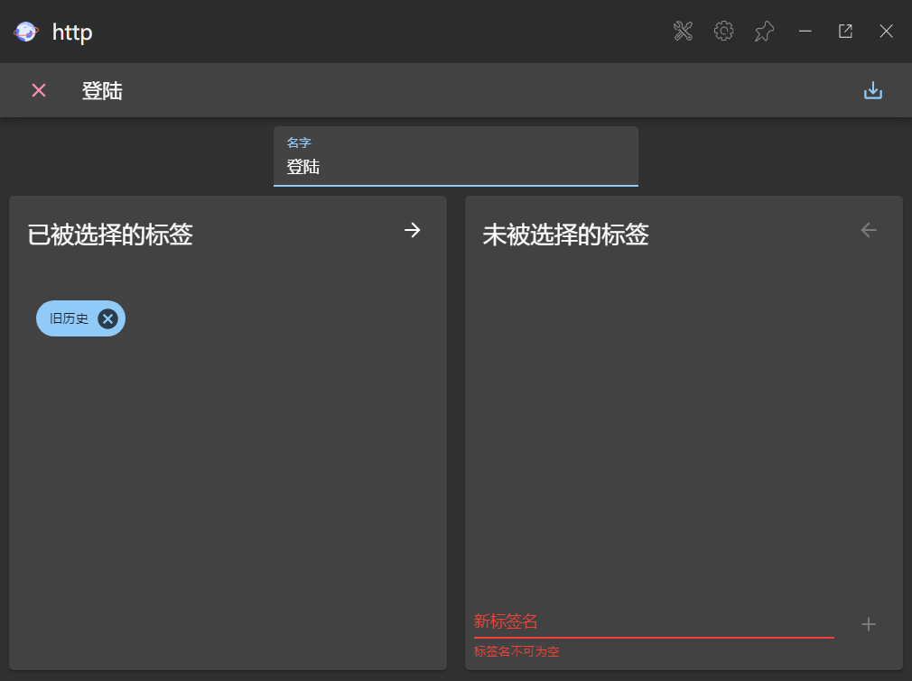
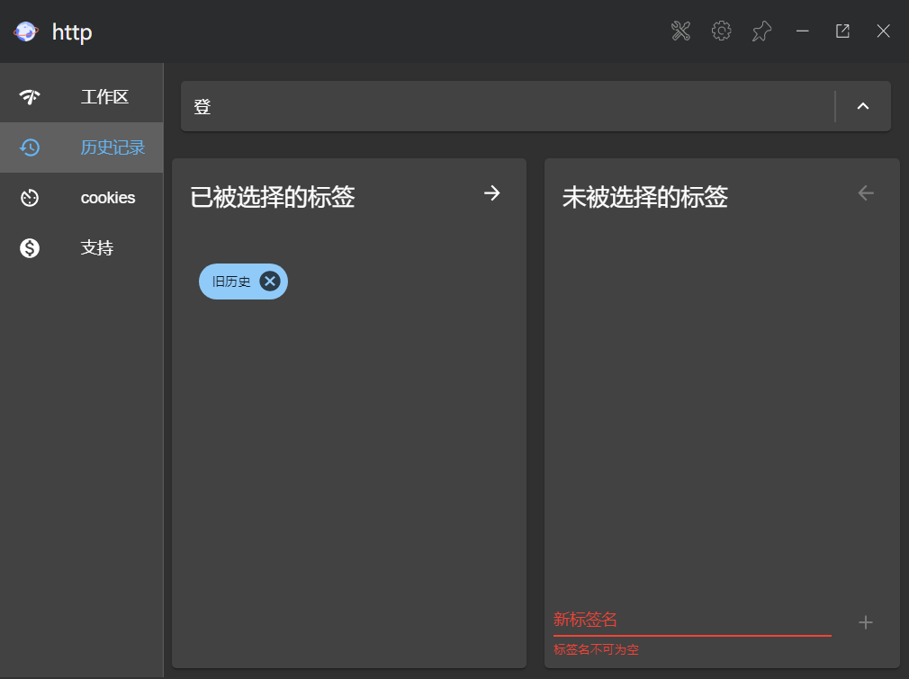
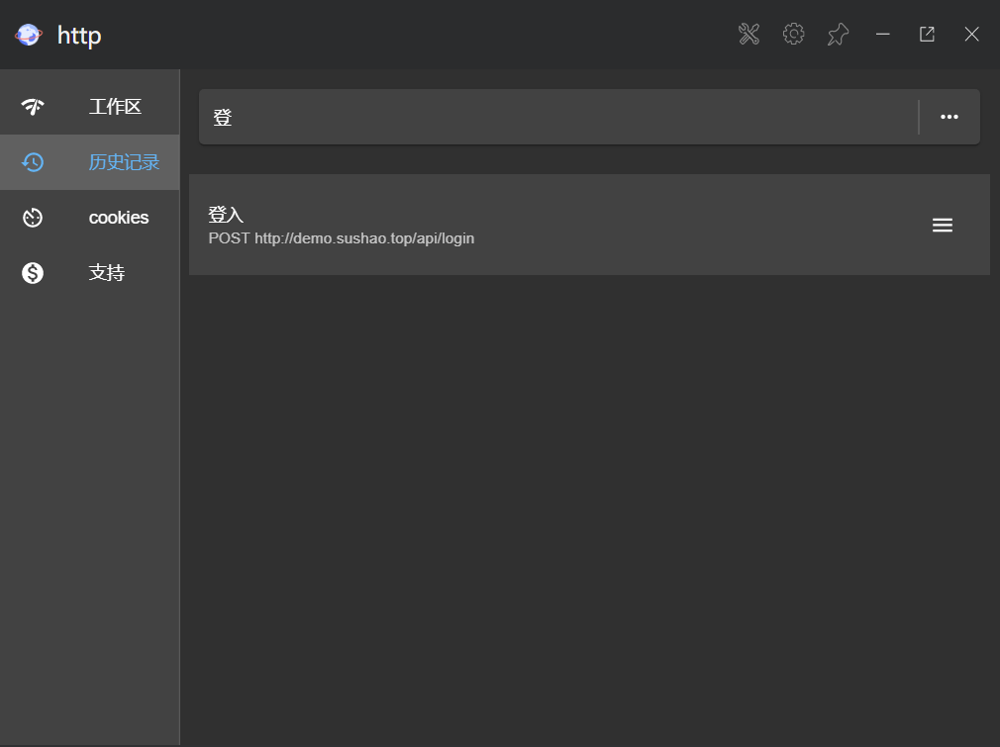
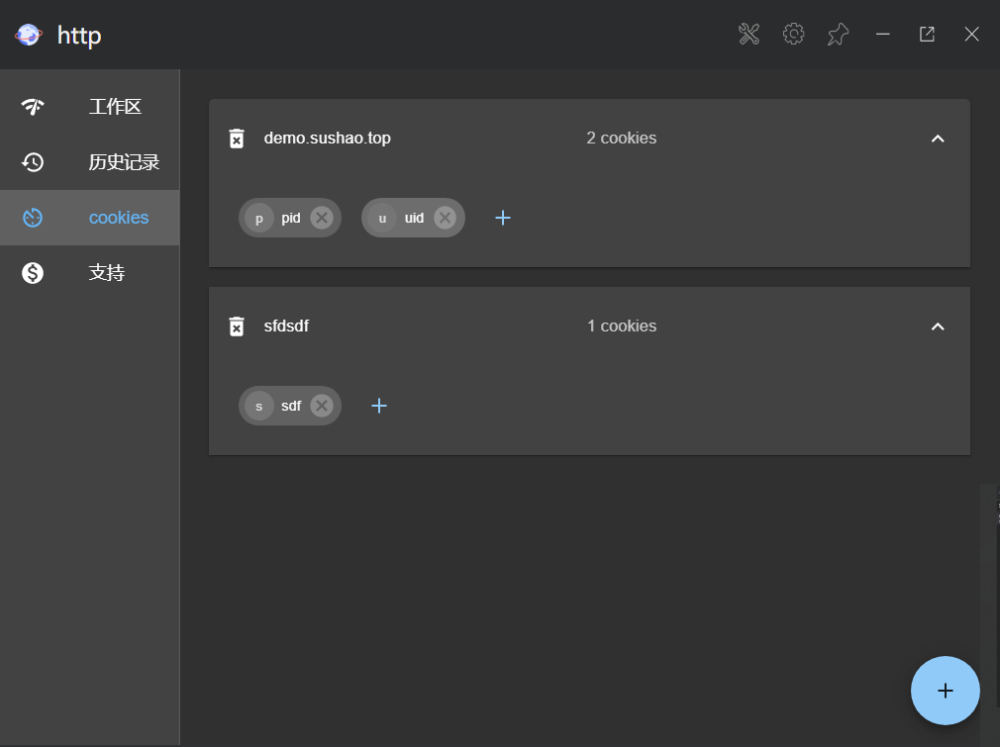
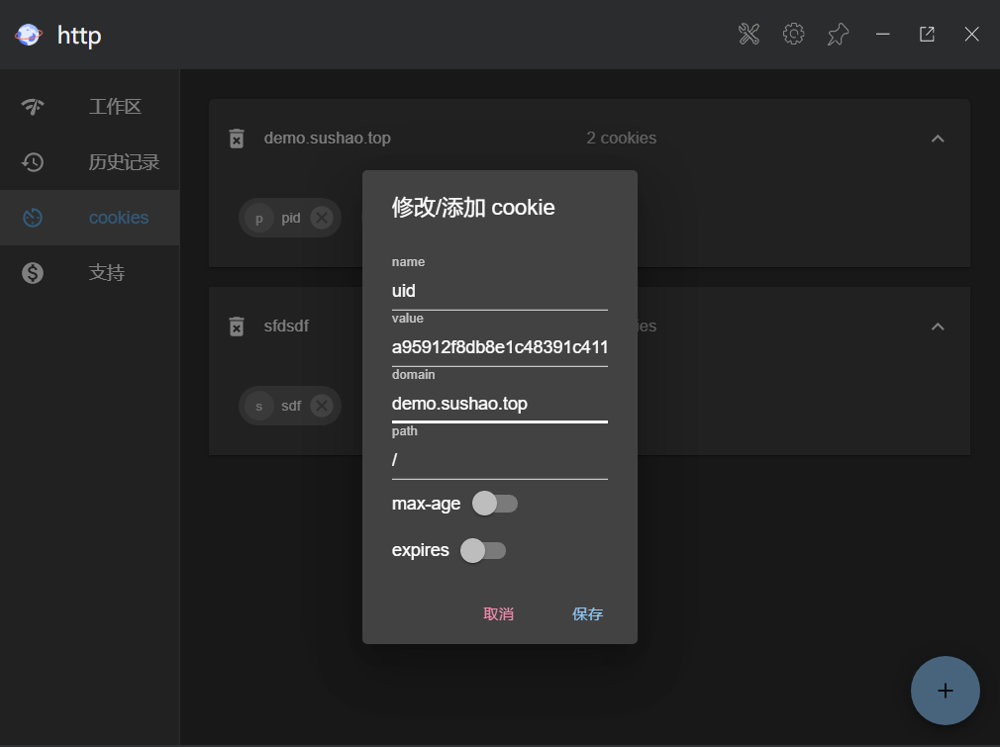
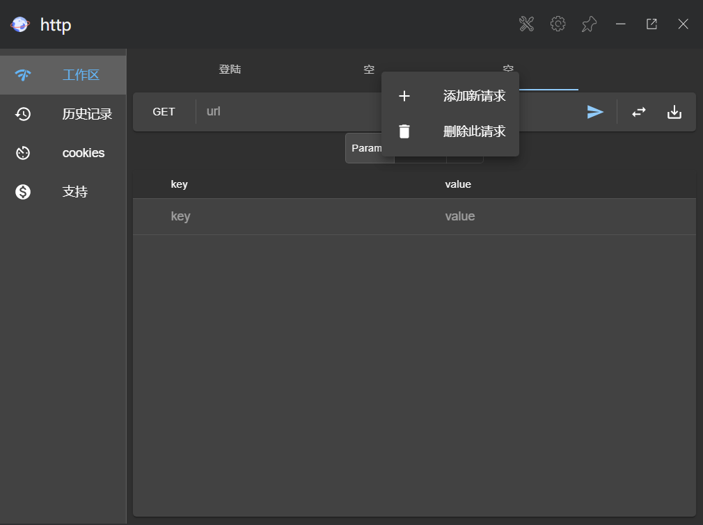
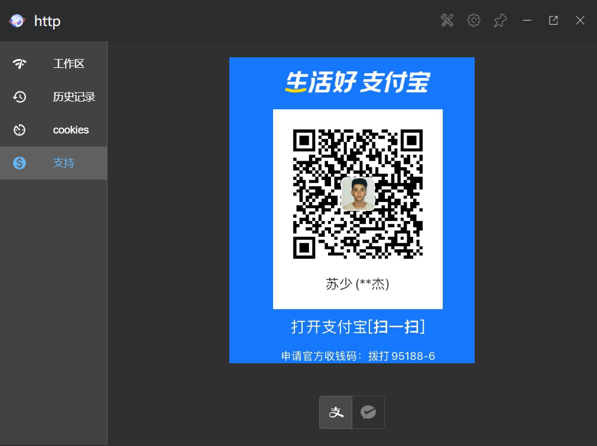

0.2.0 版本更新说明
联系方式
- 我的个人博客 sushao'bolg
- 我的github sushao
- 这个插件的开源地址 utools-http-test
- 这是我插件在官方论坛的 帖子 ,这个帖子下回复我会有提醒的
数据库更新
本次更新将以往依靠 utools 官方的数据库迁移到了 sqlite数据库,该数据库地址储存在 utools 目录的utools\database\http,下面的 http.db 文件,这个目录也储存了 setting.json 设置文件和 old.json 旧数据文件,如果想要多台机子同步的话,可以手动迁移 utools\databse\http 文件夹下的文件.
数据迁移
本版本不会删除之前的记录,反而把之前的数据记录在上文提到的 old.json 供用户查看,当用户第一次使用版本时会将旧数据迁移至新数据库,而不用担心用户数据消失
历史记录
http 标签
新的数据库的支持下, http测试插件 实现了给 http 历史记录添加标签的功能,在 http 保存页,即可管理 标签,右键点击标签支持删除,重命名标签
http 名字
现在可以拥有多个同名的 http 历史了,再也不用向以前一样设置不同名的历史记录,而且再次储存已经被存储的记录时,会直接修改旧纪录不会新建一个历史
http 历史搜索
新的历史记录查看支持搜索和标签搜索,如下图所示
 cookies
新的版本将 cookies 独立出来储存在数据库, 这样多个 http 请求就能共享 cookies,不过当用户每次进入插件时都会删除 cookie 中 max-age 和 expires 为 session的 cookie 记录和 超时的 cookie 记录,但不会删除这两个字段其中一个合法且未超时的 cookie.当两个都存在时,以max-age 为准 (http 规范和多数浏览器遵循的规范).
cookie 匹配规则
cookie 的匹配主要观察 http url是否和 cookie 的 path ,domain 两个字段是否一致,主要参考 mdn上的说明
cookies 管理
在 cookies 页面支持 cookie 修改,删除,添加等功能,并且用 domain 属性分隔开
 多标签页
本次更新添加了多标签页功能,支持多个标签页进行多个 http 请求,右键点击标签页就可管理标签页了,如下图
支持作者
本次更新添加了支持作者页面,可以通过支付宝或者微信支持鼓励作者,请作者喝一杯茶.
注意: 支持作者并非强制或者购买,不支持作者也可享受本插件的所有功能